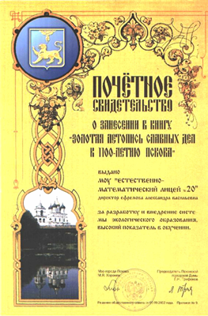
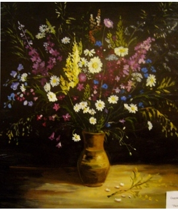

Достижения и награды
Достижения естественно–математического лицея №20 получили признание на городском и областном уровнях. За разработку и внедрение системы экологического образования, высокий показатель в обучении лицею выдано Почетное свидетельство о занесении в книгу «Золотая летопись славных дел к 1100–летию Пскова».
В 2006 году лицей стал лауреатом областной премии в рамках реализации приоритетного национального проекта «Образование» (300 тысяч рублей).
В 2007 году МОУ «Естественно–математический лицей №20» стал победителем конкурса «Лучшие инновационные школы России» и получил грант в размере 1 млн. рублей. Полученные средства позволили значительно улучшить материально–техническую базу.
В рамках реализации приоритетного национального проекта «Образование» лицей получил 6 оснащенных кабинета с современным оборудованием. Это кабинеты биологии, химии, русского языка и литературы, кабинет географии, начальной школы и физики.
|  |
Победители конкурсного отбора талантливой молодежи в 2011 г.
обучающейся в муниципальных образовательных учреждениях, в рамках долгосрочной целевой программы муниципального образования «Город Псков», «Поддержка сферы образования на муниципальном уровне на 2010 – 2012 годы»
- Смирнова Ирина – 8 «А» кл.
- Жмаева Марина – 11 «Б» кл.
- Ильина Маргарита – 11 «Б» кл.
Результаты городского тура олимпиады 2011 г.
Победителями и призерами стали 13 учеников по 7 учебным предметам:
| По химии: | ||
| 1 место – Жмаева Марина | 11-б кл. | учитель Самойлова Т.Г. |
| 2 место – Ефремкина Полина | 10-б кл. | учитель Зайцева Т.И. |
| По биологии: | ||
| 1 место – Печин Михаил | 7-б кл. | учитель Савченкова Т.Г. |
| 1 место – Гордеева Ксения | 11-б кл. | учитель Иванова Г.А. |
| 3 место – Таланина Яна | 10-б кл. | учитель Ильина В.А. |
| По географии: | ||
| 1 место – Печин Михаил | 7-б кл. | учитель Сорокина Т.И. |
| По экологии: | ||
| 2 место – Егорова Надежда | 9-б кл. | учитель Иванова Г.А. |
| 2 место – Ефремкина Полина | 10-б кл. | учитель Ильина В.А. |
| 3 место – Гордеева Ксения | 11-б кл. | учитель Иванова Г.А. |
| По русскому языку: | ||
| 3 место – Сергеева Ирина | 7-а кл. | учитель Истомина Т.Н. |
| 3 место – Алексеев Сергей | 8-а кл. | учитель Васильева О.И. |
| По истории: | ||
| 3 место – Ильина Маргарита | 11-б кл. | учитель Пухова Т.И. |
| По технологии: | ||
| 2 место – Панчиду Мария | 11-м кл. | учитель Капитонова М.В. |
Результаты научно-практической конференции учащихся Псковской области "Шаг в будущее"
| Ф.И.О. участника | Класс | Место | Название работы | Секция |
| Андреев Андрей Владимирович | 9 | 2 | Перспективы развития торговли в интернет-магазинах | Экономика |
| Васильева Дарья Сергеевна | 10 | 1 | Проблема обучения детей с ограниченными возможностями в современной российской общеобразовательной школе | Правоведение |
| Егорова Надежда Алексеевна | 9 | 3 | Видовой состав птиц экологической тропы национального парка "Себежский" | Зоология и экология |
| Ефремкина Полина Александровна | 10 | 3 | Исследование атмосферного воздуха на улице Текстильной | Химия |
| Ильина Маргарита Сергеевна | 11 | 2 | Интертекстуальные схождения в стихотворениях Гете "Kennst du das Land…" и Байрона "Know Ye the land…" | Английская филология П/секция II |
| Михайлова Наталья Игоревна | 10 | 2 | Грачевники Детского парка города Пскова | Грачевники Детского парка города Пскова |
| Сынкова Юлия Вадимовна | 11 | 2 | Наука и поэзия на примере стихотворения Д. К. Максвелла "To the Chief Musician upon Nabla: A Tyndallic Ode" | Английская филология П/секция II |
| Ухова Елена Александровна | 11 | 1 | Языковые средства реализации концепта "Жизнь" в рассказе - антипритче Рея Брэдбери "Death and the Maiden" | Английская филология П/секция I |
| Чернышова Елизавета Романовна | 11 | 3 | Лингвистические особенности СМС-сленга немецкой молодежи | Немецкая филология |
Результаты городского конкурса рисунков
«Псков – город воинской славы»
январь 2012
Садовникова Алина, ученица 6 «Б» класса заняла 2 место в городском конкурсе рисунков «Псков – город воинской славы».
1 марта 2012 года в детской библиотеке имени В. А. Каверина состоялось торжественное открытие персональной выставки работ Садовниковой Алины.

|
 | |
{kind=link}
{kind=link}
{kind=link}
{kind=link}
{kind=link}